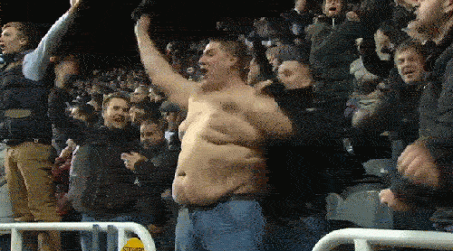

< < < Back
America’s Passive Obsession With Professional Sports Is Promoting Obesity – Return Of Kings
As the money being plowed into the NFL, NBA, MLB and NHL continues to grow, America is getting fatter and fatter. Whether or not the chilling prediction that lard-loving American youngsters today will predecease their parents comes true, people from San Diego to Augusta in Maine are shaving 5-10 years or more off their lifespans because of their significant weight problems.
The dollar signs made off professional sports, however, are only rising. A culture ravaged by obesity has an insatiable hunger to watch other people keep fit, avoiding it themselves at all costs.
After all, there are only 24 hours in a day. An obsession with sports naturally translates into less time for everything else. In high school and college, your all-round lack of genuine responsibility in life means that you have the time to play alongside your teammates and keep fit at the same time. Hit the real salaried working world and that’s a different story. Watching sportscasts or replays quickly becomes the 7 or 8pm weeknight substitute for hitting the gym after eight to ten hours at the office.
This is not to say that sport explains every aspect of the obesity crisis. Whereas obesity used to be a sign of slovenliness and disrespecting yourself (aside from some serious medical explanation), now it is culturally perceived as an indication that people are simply too stressed. Worse still, “fat acceptance” mantras spread the lie that being fat is actually healthy because slimmer people are somehow desperately malnourished.
Nevertheless, when all this collides with people vicariously living their sporting fantasies via athletes on a TV screen, the result is a culture defined by watching sports, rather than sufficiently indulging in the exercise that partaking in sports represents.
Why are so many diehard sports fans fat?

He may have diabetes, shocking blood pressure and an expected lifespan of just 52, but at least he saw every Packers game this year.
If you’re a sporting nut and superfit, good for you. That said, I am perennially confronted by sports-haters with svelte physiques and sports-lovers with beer bellies the size of an actual beer keg. The paradox is hardly the stuff of magic. A person hitting a treadmill in a gym may have a TV featuring sports in front of them, but there’s no slackening of the posture and no potato chips. Oh, and something called exercise is taking place. To boot, there are other people around and we generally always want to do better in front of others at the gym.
Let me stress again that it is not impossible for a genuinely healthy population to love sports as much as a squirrel loves nuts. Yet the dramatically short attention spans of the average person, combined with the instant gratification of modern fast food and snacks, makes this particularly unlikely. An obsession with sports too often becomes a cheap surrogate for being “involved” in sports. Somehow looking at x number of games and highlights packages each week becomes one’s definition of healthy activity.
Stop living your own dreams through someone else
Though many are not strictly-speaking fat, sports hooligans around the world beg the question, “What are they actually doing with their own lives?”
A fixation on sports is pernicious when it dovetails with vicariously living the life of the athletes themselves. Many sports fans can remember ten times as many statistics and plays as the sportsmen who actually made them. This phenomenon is not limited to sports, but unlike remembering memorizing passages of a book (which can potentially broaden your horizons at least), watching countless sporting games adds virtually nothing in terms of improving your life or cultivating excellent standards of discipline, self-awareness and intelligence. And it certainly won’t sculpt your abs or make your biceps bigger.
There’s nothing inherently wrong with cheering on Team USA in the next Winter Olympics for ice hockey, or the Denver Broncos in the NFL playoffs. It’s when your dedication to your favorite team or player outweighs your commitment to yourself. Are you overweight? You shouldn’t be watching sports at all (except for active social gatherings, not sitting with fellow lard boys on the couch). Are you broke? You shouldn’t be watching sports.
Instead, you should be out there, making your life (not hoping for it) with the same kind of hard work ethic as the athletes you see on TV. You needn’t be in any of these very negative categories either for your passive, couch-dwelling sports career to become a problem weighing you down. Watching excessive sports and other idle time-wasting could be the difference between an okay or great business, social life, educational experience or rise up the company ladder.
Get away from the screen and get real (and fit)

A picture shows a thousand words, or a sports fan’s diet of ten thousand calories a day.
If this piece forces you to challenge any overly passive way in which you spend your time, not just in watching sports, that’s a step forward. You owe it to yourself to make the best possible use of your time and energies, day in, day out. The line between relaxation or chilling out and laziness is one people constantly blur and shift in their minds. You won’t be the next Tom Brady, but you do have countless opportunities every year to show your body and life the same respect and discipline he shows his.
Meanwhile, take note of those around you. The men who let their lives fade away and then crumble by cheaply co-living the dreams of people who earn millions of dollars to set foot on a football field, basketball court, baseball diamond, or ice hockey rink. You want a life that tends towards your own version of the accomplishments of the athletes, not those who follow athletes at the expense of themselves.
Read More: How Fans And The Media Are Making Professional Sports Unbearable